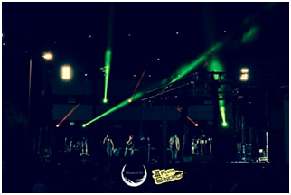

III Festa do Sineiro
Um conceito irreverente que marcasse os ubianos em termos de festividades académicas foi o projeto de alguns núcleos da Faculdade de Ciências Sociais e Humanas da UBI. Nasce assim há três anos atrás a Festa do Sineiro, considerada já por muitos um dos maiores eventos festivos da academia.
Reggae, cerveja e boa vibe prometiam ser a opção certa dos ubianos para mais uma Festa do Sineiro. Nesta terceira edição foi assim que se aqueceu a noite de 8 de maio ao som de Bezegol, o artista mais aguardado da noite. “Já não é a primeira vez que atuo na Covilhã e é sempre um prazer voltar aqui. O público é muito recetivo e ultrapassei completamente as expetativas acerca desta noite” afirma o artista.
Com música para todos os gostos o cartaz desta edição abriu com o já conhecido entre o público ubiano, Virgílio Faleiro. “É sempre um gosto atuar para estes jovens, é um público irreverente e cheio de energia que facilmente faz a festa”, refere Virgílio.
Antes do cabeça de cartaz atuou ainda Dentinho, um artista que tal como Bezegol segue a linha do reggae e que não deixou a festa parar. “Foi a primeira vez que atuamos aqui e foi um gosto enorme devido à adesão do público, foi uma boa experiência”, conclui o artista acerca da sua primeira passagem pela Covilhã.
Os ubianos despediram-se da III Festa do Sineiro ao som de Bass Brothers, últimos artistas em palco, que criaram um amanhecer cheio de energia no sineiro até às sete da manhã.
publicado em: quarta-feira, 14 de Maio de 2014